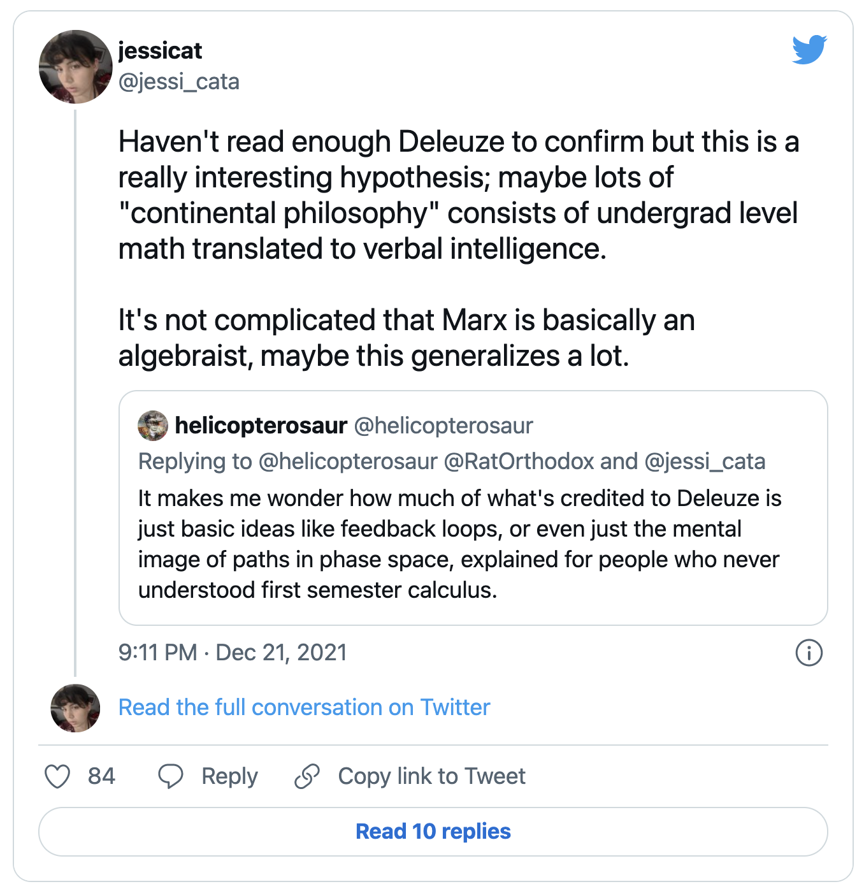
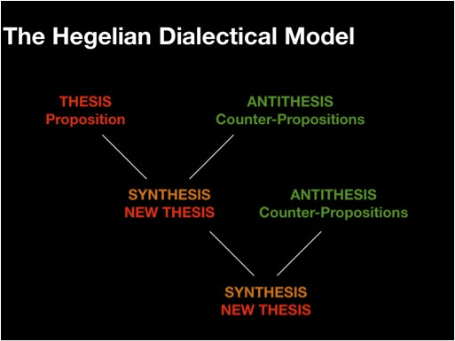
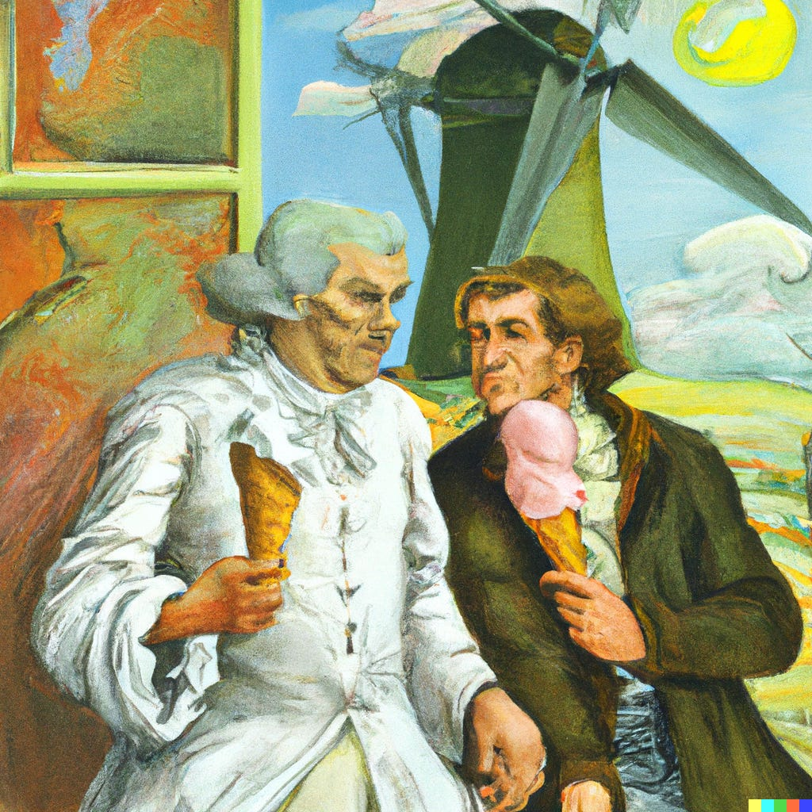

minimalpriora spinoff |
Updated | ||
|---|---|---|---|
| Author | Jan Kirchner | ||
Previously in this series:Frankfurt Declaration on the Cambridge Declaration on Consciousness, Belief-conditional things - things that only exist when you believe in them
Looking back, I feel bad about how I wrote the Frankfurt declaration. I’m not sure I managed to convey that I am against both animal suffering and the Cambridge Declaration[1]. Also, mixing in that fictional narrative of intoxicated neuroscientists partying and signing something they don’t understand might have taken things too far[2]. But, oh well, live and learn.
[2]
I also found out that 10 years after the declaration was made, its initiator is still very active on Twitter and will block anyone who says something critical about it.
[1]
To clarify my central point from that post: I don’t think a declaration from a handful of neuroscientists should form the core of any argument for something as important as the well-being of non-human animals.
How can I avoid that failure mode? How can I clearly state that when I’m writing about consciousness, continental philosophy, and/or ghosts, I’m poking fun at something I don’t understand? I am tempted to write another declaration but that would be a bit too on the nose. Instead, I’ll just put a clear “epistemic status” warning at the top of each post in this series. Cool? Cool.
Epistemic status: Spurious fragments of sense-making, arranged to amuse, not to enlighten.
Does anyone rememberwordcels vs. shape rotators?[3] No? Okay, good for you.
[3]
That was three months ago, but it feels like something already from a very distant past.
A rift divides philosophy, with analytic philosophy (a broad and still ramifying movement in which various conceptions of analysis compete and pull in different directions) on one side and continental philosophy (a term used by analytic philosophers to describe what they are not) on the other. Analytic philosophy gave us evergreen tautologies like 1+1=2, ‘snow is white’ is true if and only if snow is white, and “Whereof one cannot speak, thereof one must be silent.” Continental philosophy, in contrast, provides rich head-scratchers to ponder, like Transcendence constitutes selfhood, God is, as it were, the sewer into which all contradictions flow, and “It is hard enough to remember my opinions, without also remembering my reasons for them!”
Analytic philosophy is sometimescriticized for not engaging with the deep questions, like “Is true beauty subjective or objective?”, “Is it easier to love or be loved?” or, importantly, “Would you ever eat insects in a restaurant?”
Continental philosophy is sometimes criticized for… ahem. A lot of things.
Large swaths of philosophy (e.g. continental and postmodern philosophy) often don’t even try to be clear, rigorous, or scientifically respectable. This is philosophy of the “Uncle Joe’s musings on the meaning of life” sort, except that it’s dressed up in big words and long footnotes. You will occasionally stumble upon an argument , but it falls prey to magical categories and language confusions and non-natural hypotheses. You may also stumble upon science or math, but they are used to ‘prove’ things irrelevant to the actual scientific data or the equations used. – lukeprog
That is a harsh assessment, but it comes from someone I have previously praised for his ability for nuance, so make of that whatever you want.
One cynical explanation (that I will take way too seriously in this essay) for the convoluted writing style of continental philosophers is that they do not have the mental machinery to express their ideas in a formal language like mathematics. Perhaps many of the things continental philosophers are trying to express are only ideas from undergraduate-level maths.
source
Evidence for this hypothesis comes in many shapes:
On Quora, the question “Do Continental philosophers resent their lack of mathematical ability?” draws responses from a few continental philosophers. Their answers are very long and hard to compress, but I will summarize them as “yes” to save your time.
StackExchange asserts, “You need to know absolutely no logic, philosophy of language or mathematics to understand Heidegger, Derrida, Foucault, or most of the other ”famous” continental philosophers.”
Marx (a continental philosopher, according to Wikipedia) is having a very hard time with differential calculus and writes pages and pages arguing why it doesn’t make sense[4].
[4]
There is a steelman of Marx’s position, but this essay is not concerned with nuance.
In this essay, I’ll run with that premise and draw loose parallels between undergraduate maths and continental philosophy. I’m almost certain I won’t be doing the ideas from continental philosophy justice, but I don’t know in which way I am misrepresenting them. It might still be a useful starting point if you ever want to learn more about continental philosophy or maths.
“Dialectic” is not too hard to explain. The word comes from the old greek “dialegesthai,” which means “discourse” or “conversation”. SEP defines it as:
a term used to describe a method of philosophical argument that involves some sort of contradictory process between opposing sides.
The most well-known instances of “dialectics” are perhaps the Socratic dialogues, where through a series of back-and-forth arguments, Socrates helps his interlocutor refine their philosophical views.
Now, what is Hegel’s dialectic[5]? Someone on Quora asks, “Could someone explain Hegelian dialectics in simple terms, particularly negation?”. The top answer runs 1500 words, introduces “triplicity”, “being-for-itself vs. being-in-itself”, and “being-a-thing-on-the-floor”, and uses words like “unexplicated”, “originary”, and “sublation”.
[5]
Really, Jan, really? How did things go so wrong? There was a time when I was writing about albatrosses and water allergy.
I asked GPT-3 to give me a summary of that summary, and the result is pretty impressive:
The dialectic is a moving soul of further development where things are related to each other in threes. The first part of the three is the in-itself, the second is the for-itself, and the third is the unity of the first two terms, the in-and-for-itself. This is the developmental path that truth must submit itself to, to realize or explicate itself.[6]
[6]
If machines can suffer, I would not be surprised if summarizing Hegel induces some non-negligible amount of suffering.
Still, total gibberish, but at least very compact gibberish. But what I’m getting is that Hegel’s dialectic is a process for finding the truth that occurs in three steps, where the third step is a combination of the first two steps. This intuition is corroborated by what Google Image Search produces:
source
Given a thesis (“The sky is blue”), someone comes up with an antithesis (“But sometimes the sky is black”) which is merged into a synthesis (“At day the sky is blue and at night the sky is black”). Then the process starts again, with the antithesis being f.e. “Sometimes there are clouds in the sky”.
I don’t think that’s an accurate summary of Hegel’s dialectic. If it was, why doesn’t anybody just say that? But assuming that the above picture is an accurate summary of Hegel’s dialectic, we can uncover a neat parallel with undergraduate mathematics, particularly PCA.
I’m assuming that my audience is much more familiar with PCA than with continental philosophy, so I will keep the introduction brief: Principal Component Analysis (PCA) is a method for decomposing a dataset into constituents, s.t. some components have disproportionately large explanatory power. While the most practical way of computing PCA involves iterated matrix juggling, the conceptual explanation of how to get a set of principal components is very instructive:
A painting of Hegel wrestling a vector space. Generated with DALL-E.
Framed like this, PCA maps naturally onto Hegel’s dialectic! Each principal component corresponds to a thesis (and/or) and antithesis, and the combination of principal components corresponds to the synthesis. Indeed, in the limit, the dialectic process results in truth (all the principal components explain all the variability).
Using this dictionary, we can produce sentences that sound like continental philosophy:
There is no clear division of thesis and antithesis, both are aspects of the same dialectic process leading to truth.
Pretty cool, eh? And much easier than all that stuff about the “moving soul” and the “in-and-for-itself”. In Hegel’s defense, PCA was only invented in 1901, some 70 years after Hegel’s death. So he couldn’t have explained it in those terms. But if any living descendants want to rectify the situation, hmu, I can set up a GitHub page with a PCA explainer for y’all.
This is a bit awkward. While coming up with the idea for this post I did not really spend a lot of time fact-checking whether the philosophers I’d wanted to talk about are actually continental philosophers. And I came up with a cool correspondence between Kant’s categorical imperative and Lagrange multipliers. But Kant lived before the analytic/continental rift in philosophy happened and he has influenced both camps.
Hair-splitting over whether Kant fits into the framing of this essay or not feels like a suboptimal use of time. The best way out is always through. Let’s not skip a beat and pretend that Kant fits. He does talk a lot about metaphysics, which is such a continental philosophy thing to do.
Nowadays, Kant’s moral philosophy is usually introduced in contrast with utilitarianism à la Mill. Reading the two side-by-side really highlights the disagreement:
Text within this block will maintain its original spacing when published
Act only according to that maxim whereby you can at the same time will that it should become a universal law. - **[Kant - Groundwork of the Metaphysics of Morals](https://www.woldww.net/classes/Information_Ethics/Kant-notes_and_excerpts.htm#:~:text=A-,good,-will%20is%20good%20nothttps://www.woldww.net/classes/Information_Ethics/Kant-notes_and_excerpts.htm)**Text within this block will maintain its original spacing when published
The creed which accepts as the foundation of morals Utility, or the Greatest Happiness principle, holds that actions are right in proportion as they tend to promote happiness, wrong as they tend to produce the reverse of happiness. - **[Mill - Utilitarianism](https://www.utilitarianism.com/mill2.htm#:~:text=The-,creed,-which%20accepts%20as)**
Could there ever be common ground between the two or do they represent incommensurable fragments of absolute truth?
A painting of Immanuel Kant and John Stuart Mill solving a difficult math problem together. Generated with DALL-E.
Well, for one, the two never talked to each other (Kant died in 1804, Mill was born in 1806). Second, it was proven recently that utilitarianism is the “correct” moral philosophy. Third, neither of them ever metJohn von Neumann (born in 1903), so he couldn’t tell them about his utility theorem.
This theorem is relevant because once you put down mathematical notation for what utility means, it becomes obvious very quickly that Kant and Mill are in excellent agreement. They just have different situations in mind. Let’s write it out:
Imagine being presented with multiple choices,
a,b,…,z, and having to choose. Thanks to von
Neumann’s utility theorem, you can assign each of these options
a utility value, u(a),u(b),…,u(z), and simply pick the
one with the highest utility, u(m) >= u(n) ∀n.
That’s just utilitarianism. If you’re feeling fancy, you might also
take the utility values of your buddy Berta into account,
v(a),v(b),…,v(z), and pick the option that produces the
highest amount of combined utility,
u(m) + v(m) >= u(n) + v(n) ∀n. Easy peasy lemon
squeezy. Not sure why Mill needed 20k
words to explain this.
Kant now rightfully points out that this is not a perfect
strategy in general. In particular, if the optimal option for Berta
and you happens to be: m = ’eat all the ice cream’,
then this might make the two of you very happy, but Immanuel and the
rest of the world would be rather put out. Or, more to the
point, it is not sufficient to optimize _
locally_ , you need totake_global_
constraints
into account. Think about what the world would be like
if everyone picked the same thing as you.
So, how do we account for global constraints? Well, a constraint
is just another word for a mathematical function. Let’s say that our
constraint is that everyone should eat the same amount of ice cream.
We can write that as a function, f(x) = c, where
x is our amount of ice cream consumed and
c is the amount of ice cream consumed by everyone
else.
A painting of Kant and Mill eating ice cream. Generated with DALL-E.
To include a constraint into Von Neumann’s utility theorem, we
employ another tool from the undergraduate toolkit: Langrange
multipliers. Lagrange even was a contemporary of Kant and Mill,
so there is little excuse for why they didn’t come up with this
themselves. Instead of natively maximizing utilities,
u(m) + v(m), we now optimize for the maximum of
u(m) + v(m) - λ*(f(x)-c). Here, λ is the
Lagrange multiplier, a mathematical way for us to express that we
should balance the combined utility with the amount of ice cream
consumed by everyone else. When the constraint is satisfied
(f(x)=c) the Lagrange multiplier drops out of the
equation and we can just maximize utility as before.
Now we see clearly that Kant and Mill are actually compatible: we should pick the option that maximizes both utility and that satisfies the constraints. In the end, they’re both just saying:
I like ice cream, but if everyone eats ice cream, the world will be a bad place.
Everyone knows that a good essay contains exactly three examples. Now I already did Hegel, Kant, and Mill, three examples, but spread across only two sections. To resolve this unfortunate situation I’ll keep this section short and only outline in broad strokes how Heidegger’s metaphysic can be identified with basic category theory. The scaffolding I provide in this section should be more than sufficient for the careful reader to fill in the missing details.
First, it is important to understand that Heidegger’s “being” is neither a thing nor a concept. It is, as Heidegger puts it, the “beingness of beings”. Heidegger wants to get at the essence of being, and for that, it is important not to think of it as an actual thing. Second, Heidegger also wants us to understand that being is not the absence of “nothingness”. Rather, “nothingness” is the absence of being, but the inverse is not true.
So far, so easy.
An abstract painting of Heidegger’s Being and Nothingness. Generated with DALL-E.
Category theory can help us to understand the dynamic of Being and Nothingness more deeply. A category is a set of things (called “objects”) and the relationships between them (called “morphisms”). For example, the set of all beings is a category, with beings as objects and the relationships between them as morphisms. Importantly, in category theory, there is a notion of an “opposite category”.
Everything falls naturally into place once we consider opposite categories. The opposite category of the category of beings is the category of nothingnesses. The objects in this category are nothingnesses and the morphisms are the relationships between them… well, you get the idea. Heidegger’s ontological project is just category theory. He wants us to understand that being and nothingness are two different categories and that “beingness” (the beingness of beings) is just a morphism between those two categories.
I can’t lie to you, dear reader. That last section was mostly written by GPT-3[7]. I didn’t want to put my poor brain through the exercise of coming up with a Heidegger/category theory crossover. But if that’s your jam, I can only encourage you to dive deeper into it! Mysterious Answers to Mysterious Questions aren’t typically useful, but your personal enjoyment should count for something too.
[7]
Why not IAN, you ask? The sad truth is that the gap between the very large models and the smaller fine-tuned models has become very large. But I’m planning to fine-tune a DaVinci model through the API soon :)
Is there anything else left to say? I told my colleagues about the idea for this post during lunch today. While explaining the idea out loud I realized that the audience for this essay might be very small indeed. But that has never stopped me and I’d feel like a sellout if I start caring about it (too much). Anyways, next week we’ll return to our regularly scheduled program of slightly less weird essays! Consider signing up for the newsletter to get a notification, it’s free and will stay free (:
Subscribe